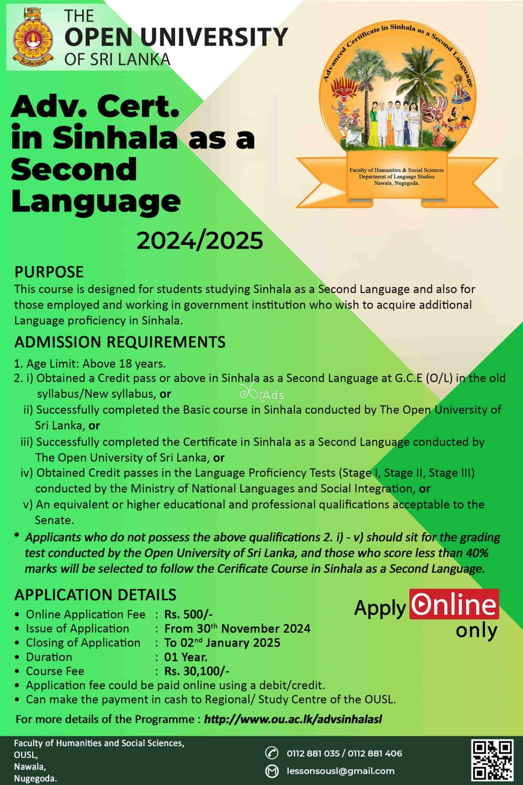

| Home| Admission | About Us | Contact | | |
Postgraduate Diploma in Special Needs Education programThe Department of Special Needs Education of the Faculty of Education offers this fifteen-month programme. The medium of instruction will be determined on the basis of the student number in each medium. The target group is graduate teachers who are interested in Special Needs Education. This programme has been accepted by the Ministry of Education as equivalent to the Post-graduate Diploma in Education offered by the OUSL and any other Post-graduate Diplomas offered by any other conventional university. |
|
Bachelor of Education (Honours) in Primary Education Degree ProgramThe Department of Early Childhood and Primary Education of the Faculty of Education, Open University of Sri Lanka has been conducting the Bachelor of Education (Hons) in Primary Education Programme since 2019. The main purposes of this programme are to provide opportunities to enhance knowledge and skills in Early Childhood and Primary Education fields, to open avenues to get higher qualifications and professional training to those who are engaged in teaching at Early Childhood and Primary Levels, and also to expand opportunities for students who have G.C.E (Advanced Level) qualifications and who have missed the opportunities to enter any other state university. Having considered the above requirements, the Department of Early Childhood and Primary Education has decided to introduce Bachelor of Education (Honours) in Primary Education Programme. |
|
|  |
Advanced certificate in sinhala as a second language programThis programme focuses on developing the four major language skills, viz. listening, speaking, reading and writing and also the appropriate use of grammar. The programme also pays special attention to the needs of employees in the public sector and private sector who wish to improve their communication skills in Sinhala, in order that they may function more efficiently at their places of work. A variety of exercises, tasks and activities have been designed following the communicative method of language teaching. This has been especially designed for those whose first language is Tamil. |
|
|
|